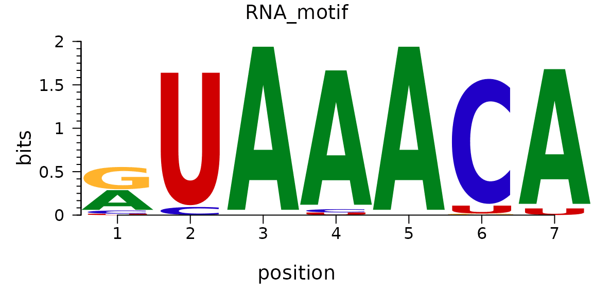
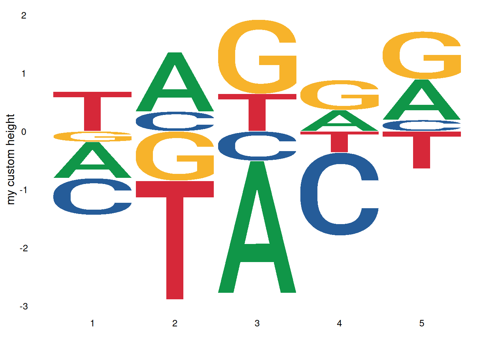
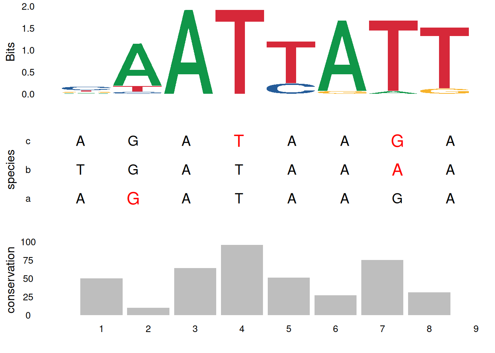

# Installing packages
if (!requireNamespace("ggplot2", quietly = TRUE)) {
install.packages("ggplot2")
}
if (!requireNamespace("ggseqlogo", quietly = TRUE)) {
install.packages("ggseqlogo")
}
if (!requireNamespace("cowplot", quietly = TRUE)) {
install.packages("cowplot")
}
if (!requireNamespace("gridExtra", quietly = TRUE)) {
install.packages("gridExtra")
}
# Load packages
library(ggplot2)
library(ggseqlogo)
library(cowplot)
library(gridExtra)Motif Plot
For visualizing motif logos, ggseqlogo is an R package based on ggplot2 specifically designed for plotting logos from sequence motifs. Compared to other motif visualization tools, ggseqlogo boasts advantages such as concise syntax, flexible output formats, and full compatibility with the ggplot2 ecosystem. The package supports various sequence input formats, including position-frequency matrices (PFM), position-weight matrices (PWM), and sequence vectors, and provides rich customization options to adjust the appearance of the logo plot.
Example

Motif logo images are graphics used to display conserved patterns in DNA, RNA, or protein sequences, using the size of the characters at each location to indicate the information content of that location.
Setup
System Requirements: Cross-platform (Linux/MacOS/Windows)
Programming language: R
Dependent packages:
ggplot2,ggseqlogo,cowplot,gridExtra
sessioninfo::session_info("attached")─ Session info ───────────────────────────────────────────────────────────────
setting value
version R version 4.6.0 (2026-04-24)
os Ubuntu 24.04.4 LTS
system x86_64, linux-gnu
ui X11
language (EN)
collate C.UTF-8
ctype C.UTF-8
tz UTC
date 2026-05-09
pandoc 3.1.3 @ /usr/bin/ (via rmarkdown)
quarto 1.9.37 @ /usr/local/bin/quarto
─ Packages ───────────────────────────────────────────────────────────────────
package * version date (UTC) lib source
cowplot * 1.2.0 2025-07-07 [1] RSPM
ggplot2 * 4.0.3.9000 2026-05-04 [1] Github (tidyverse/ggplot2@6870419)
ggseqlogo * 0.2.2 2025-12-22 [1] RSPM
gridExtra * 2.3 2017-09-09 [1] RSPM
[1] /home/runner/work/_temp/Library
[2] /opt/R/4.6.0/lib/R/site-library
[3] /opt/R/4.6.0/lib/R/library
* ── Packages attached to the search path.
──────────────────────────────────────────────────────────────────────────────Data Preparation
Using the built-in dataset ggseqlogo_sample, which contains three variables and two different input formats: - seqs_dna: Binding sites of 12 transcription factors obtained from the JASPAR FASTA file. The format is a list of string vectors, with the list name representing the JASPAR ID. - seqs_aa: Phosphorylation sites of kinase substrates obtained from Wagih et al. The format is the same as seqs_dna. - pfms_dna: A list of position-frequency matrices of four transcription factors obtained from JASPAR, with the list name representing the JASPAR ID.
data(ggseqlogo_sample)
head(pfms_dna,n = 1)$MA0018.2
[,1] [,2] [,3] [,4] [,5] [,6] [,7] [,8]
A 0 0 11 0 1 0 2 8
C 1 1 0 9 0 3 7 0
G 1 10 0 2 10 0 1 1
T 9 0 0 0 0 8 1 2head(seqs_aa, n = 1)[[1]][1:3][1] "VVGARRSSWRVVSSI" "GPRSRSRSRDRRRKE" "LLCLRRSSLKAYGNG"Visualization
1. Basic Motif
The ggseqlogo package can use the geom_logo function to plot data based on ggplot2 syntax, or it can use the encapsulated function ggseqlogo to plot data, and both share the same parameters.
# Using sequence vectors
ggseqlogo(seqs_dna$MA0001.1)
# Using PFM matrix
ggseqlogo(pfms_dna$MA0018.2)
# Plotting using ggplot syntax
ggplot() + geom_logo( seqs_dna$MA0001.1 ) + theme_logo()


The image above shows the motif result of MA0001.1.
Tip
Key parameters:
- data: Input data: sequence vector, matrix, or list
- method = “bits”: Calculation method: “bits” or “probability”
- seq_type = “auto”: Sequence type: “auto”, “dna”, “rna”, “aa”
- namespace = NULL: Custom character namespace
- font = “roboto_medium”: Font type
- stack_width = 0.95: Character stack width
- rev_stack_order = FALSE: Whether to reverse the stacking order
- col_scheme = “auto”: Color scheme
- low_col = ‘black’: Low-bits/probability color
- high_col = ‘yellow’: High-bits/probability color
- na_col = ‘grey20’: NA value color
- plot = TRUE: Whether to plot immediately
2. Multi-motif plot
You can use facet_wrap or facet_grid to combine multiple logo images:
# Draw multiple motifs
ggseqlogo(seqs_dna, ncol=4)
# Equivalent to
p <- ggplot() + geom_logo(seqs_dna) + theme_logo() +
facet_wrap(~seq_group, ncol=4, scales='free_x')
3. Motif plot beautify
3.1 Adjust color scheme
ggseqlogo offers a variety of preset and custom color schemes:
# Preset color scheme for DNA sequences
ggseqlogo(seqs_dna$MA0001.1, col_scheme='nucleotide')
# Color scheme of amino acid sequences
ggseqlogo(seqs_aa$AKT1, col_scheme='chemistry')
# Custom discrete color scheme
cs1 <- make_col_scheme(chars=c('A', 'T', 'C', 'G'),
groups=c('gr1', 'gr1', 'gr2', 'gr2'),
cols=c('purple', 'purple', 'blue', 'blue'))
ggseqlogo(seqs_dna$MA0001.1, col_scheme=cs1)
# Custom continuous color scheme
cs2 <- make_col_scheme(chars=c('A', 'T', 'C', 'G'), values=1:4)
ggseqlogo(seqs_dna$MA0001.1, col_scheme=cs2)
3.2 Adjust font and stacking
# View all available fonts
list_fonts(F) [1] "helvetica_regular" "helvetica_bold" "helvetica_light"
[4] "roboto_medium" "roboto_bold" "roboto_regular"
[7] "akrobat_bold" "akrobat_regular" "roboto_slab_bold"
[10] "roboto_slab_regular" "roboto_slab_light" "xkcd_regular" # Use a specific font
ggseqlogo(seqs_dna$MA0001.1, font='helvetica_bold', stack_width=0.8)
3.3 Adjust the axes and themes
ggseqlogo(seqs_dna$MA0001.1) +
theme_classic() +
theme(axis.text.x = element_text(angle=45, hjust=1)) +
labs(x='Position', y='Bits', title='Transcription Factor Binding Motif')
4. Advanced features
Drawing method selection:
ggseqlogo supports two sequence logo calculation methods:
p1 <- ggseqlogo(seqs_dna$MA0001.1, method='bits') # Information content
p2 <- ggseqlogo(seqs_dna$MA0001.1, method='prob') # probability
gridExtra::grid.arrange(p1, p2, ncol=2)
Custom sequence types and namespaces:
# Numerical sequence
seqs_numeric <- chartr('ATGC', '1234', seqs_dna$MA0001.1)
ggseqlogo(seqs_numeric, method='prob', namespace=1:4)
# Greek alphabet sequence
seqs_greek <- chartr('ATGC', 'δεψλ', seqs_dna$MA0001.1)
ggseqlogo(seqs_greek, namespace='δεψλ', method='bits')
Custom height logo:
# Create a custom height matrix
custom_mat <- matrix(rnorm(20), nrow=4,
dimnames=list(c('A', 'T', 'G', 'C')))
ggseqlogo(custom_mat, method='custom', seq_type='dna') +
ylab('my custom height')
Sequence identifier:
ggplot() +
annotate('rect', xmin=0.5, xmax=3.5, ymin=-0.05, ymax=1.9,
alpha=0.1, col='black', fill='yellow') +
geom_logo(seqs_dna$MA0001.1, stack_width=0.90) +
annotate('segment', x=4, xend=8, y=1.2, yend=1.2, size=2) + # Note that starting with ggplot2 version 3.4.0, the size parameter for adjusting line thickness has been changed to the linewidth parameter. Users of the new version of ggplot2 are advised to change size to linewidth.
annotate('text', x=6, y=1.3, label='Text annotation') +
theme_logo()
Combining multiple plots:
# Generate sequence logo
p1 <- ggseqlogo(seqs_dna$MA0008.1) +
theme(axis.text.x=element_blank())
# Create sequence alignment data
aln <- data.frame(
letter=strsplit('AGATAAGATGATAAAAAGATAAGA', '')[[1]],
species=rep(c('a', 'b', 'c'), each=8),
x=rep(1:8, 3)
)
aln$mut <- 'no'
aln$mut[c(2,15,20,23)] <- 'yes'
# Generate sequence alignment plot
p2 <- ggplot(aln, aes(x, species)) +
geom_text(aes(label=letter, color=mut, size=mut)) +
scale_x_continuous(breaks=1:10, expand=c(0.105, 0)) +
xlab('') +
scale_color_manual(values=c('black', 'red')) +
scale_size_manual(values=c(5, 6)) +
theme_logo() +
theme(legend.position='none', axis.text.x=element_blank())
# Creating a conservative bar chart
bp_data <- data.frame(x=1:8, conservation=sample(1:100, 8))
p3 <- ggplot(bp_data, aes(x, conservation)) +
geom_bar(stat='identity', fill='grey') +
theme_logo() +
scale_x_continuous(breaks=1:10, expand=c(0.105, 0)) +
xlab('')
# Composite plots
cowplot::plot_grid(p1, p2, p3, ncol=1, align='v')
Integration with other tools:
ggseqlogo can be used with other bioinformatics packages. For example, the ggmotif package can directly extract motifs from MEME result files and visualize them using ggseqlogo. The universalmotif package also provides integration functionality with ggseqlogo.
Application
Motif maps are widely used in genomics and molecular biology research:
Transcription factor binding site analysis: Displays conserved binding patterns of transcription factors in DNA sequences.
Protein domain analysis: Shows conserved amino acids in functional domains of protein sequences.
Multiple sequence alignment visualization: Displays conserved regions in multiple sequence alignments.
ChIP-seq analysis: Visualizes enriched motifs identified by ChIP-seq experiments.
Genomic feature analysis: Displays sequence features of specific regions of the genome.
Reference
[1] Wagih O. ggseqlogo: a versatile R package for drawing sequence logos. Bioinformatics. 2017;33(22):3645-3647. doi:10.1093/bioinformatics/btx469